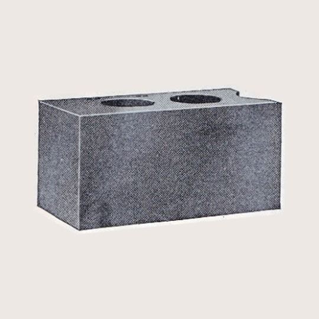
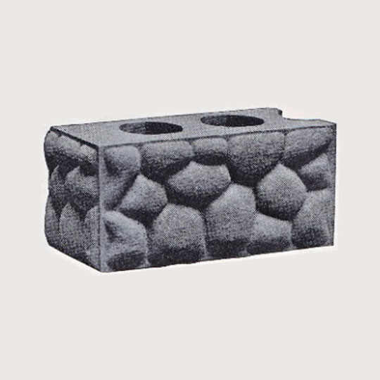
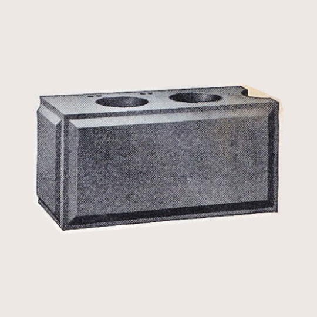
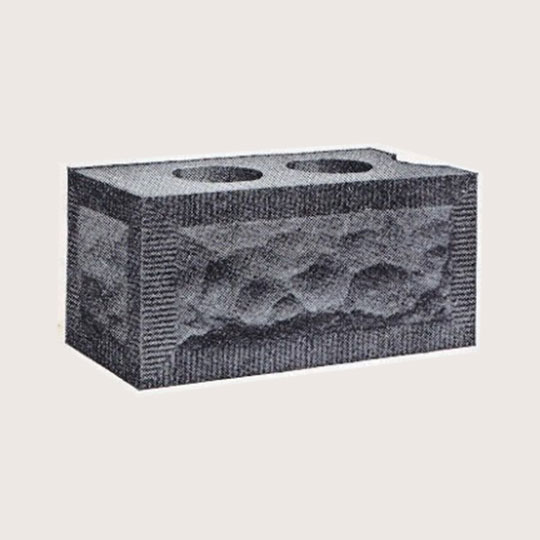
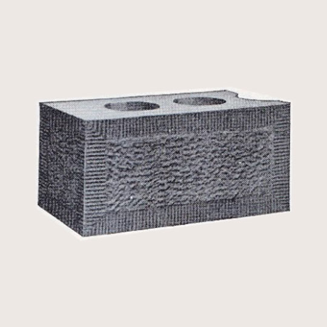
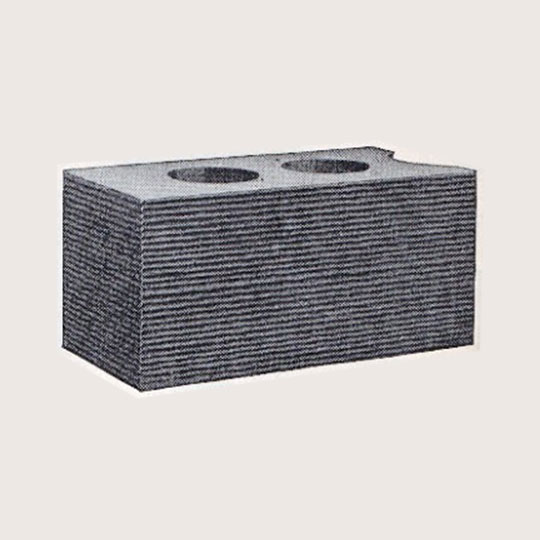

01

Standard Plain Face
Can be furnished in all Divisions. But one endgate needed.
Sears, Roebuck and Co. / Industrial Catalogue
A responsive digital archive of historic concrete block face designs, redesigned as a modern industrial catalogue.

Can be furnished in all Divisions. But one endgate needed.

A fine above-ground foundation block. 16-inch plate not made in Division D. Division F not made in any size.

16-inch plate not made in Division D. But one endgate needed.

Rock face with 1 1/2-inch tooled edge. 16-inch plate not made in Division C and D.

Bushhammer face with 1 1/2-inch tooled edge. Division F not made in any size.

But one endgate needed
This page reinterprets the original concrete block catalogue as a responsive web layout. The design uses CSS Grid for the main card structure and Flexbox for navigation and internal alignment.